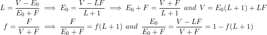

Leverage Ratio
Aug. 2021
For a landlord, both monthly cash flow and rate of equity buildup depended on their initial down payment, or their leverage gained with a mortgage. Later we will determine how the timeframe of the mortgage before refinancing or sale also affects the rate of equity buildup.
The net monthly yield of a property is due to net income from rent after expenses, less the mortgage payment (p), and due to equity buildup (ΔEn) over a period of n months from mortgage payments and appreciation.

The effective leverage ratio (L) is the ratio of loan size (P-E0) to down payment plus closing/financing fees (E0+F). It is always a rational number greater than or equal to zero. For conveniance, we also define two proper fractions e and f based on closing costs such that e+f=1.
The marginal dividend model calculates a target size for home loans, based on a break even point where monthly mortgage payments equal the net income for rental properties after other expenses. From the previous articles in this series, the monthly mortgage payment (p) and loan principal (property price, P, minus down payment, E0) are related by a constant (Rm) that is set by mortgage rates.

Both of these portions depend strongly on the effective leverage ratio. In the past, the leverage ratio would be constrained by federal reserve requirements. Today the effective leverage ratio is only constrained by funding fees and quasi-federal/private bank policies, so it is important to determine the effect of leverage on yield.

The optimum effective leverage ratio (L0) can be found based on the likely timeframe (n months) before selling or refinancing:

Finally, for n > C the optimum can be approximated: